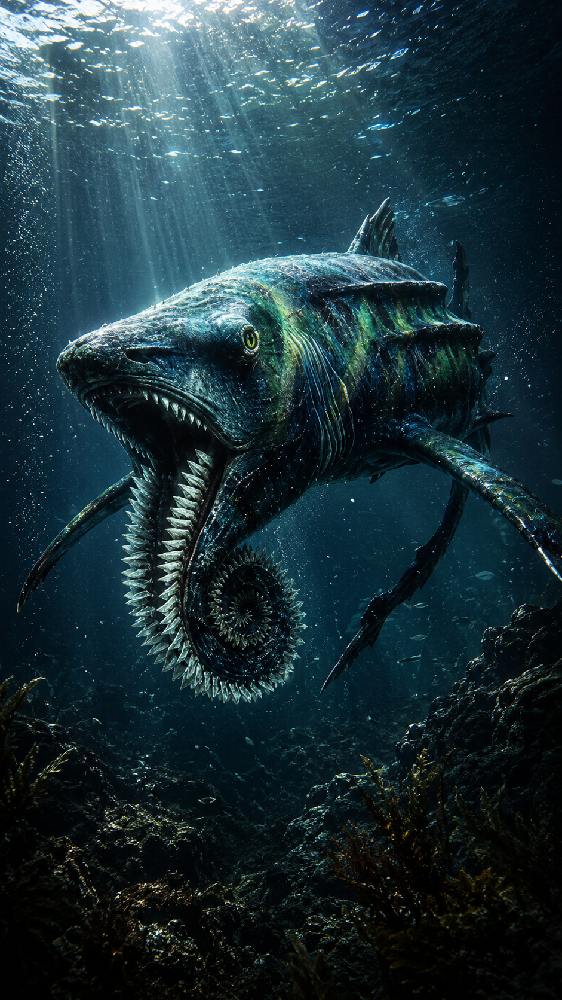
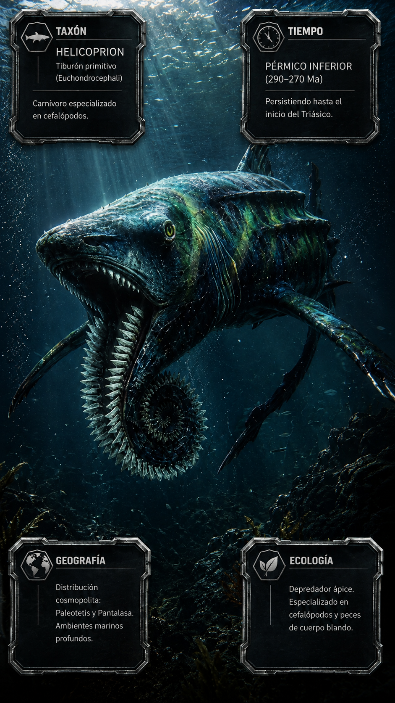
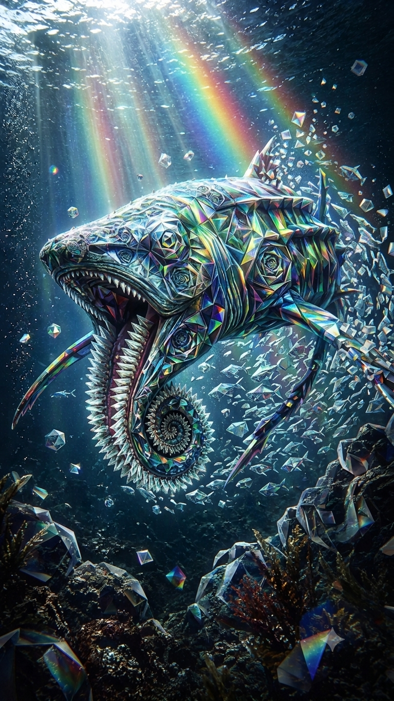

Paleoficha de PalEntropía



TAXÓN:
Helicoprion
CLADO:
Euchondrocephali (Holocephali)
DIETA:
Carnívora (depredador especializado en cefalópodos y peces de cuerpo blando)
TAMAÑO:
Entre 4 y 8 metros de longitud.
LOCOMOCIÓN:
Nectónica activa; hidrodinámica adaptada para la persecución en la columna de agua.
TIEMPO:
Pérmico Inferior (aprox. 290–270 Ma), persistiendo hasta el inicio del Triásico.
GEOGRAFÍA:
Distribución cosmopolita en Paleotetis y Pantalasa.
EQUIVALENCIA PALEOGEOGRÁFICA:
Ambientes pelágicos y plataformas continentales profundas.
AMBIENTE PALEAOECOLÓGICO:
Mares epicontinentales con elevada productividad primaria y abundancia de cefalópodos.
ECOLOGÍA:
• Flora: Fitoplancton y algas bentónicas en zonas litorales.
• Fauna secundaria: Cefalópodos (especialmente amonoideos), condrictios y osteíctios primitivos.
• Nichos: Superdepredador especializado. Su verticilo dental en espiral, situado en la mandíbula inferior, permitía sujetar y cortar presas blandas con una mecánica única entre los vertebrados.
• Relaciones: Competía con otros tiburones paleozoicos especializados y constituye uno de los experimentos evolutivos más extraordinarios de los condrictios.
CLIMA:
Wm14 (Marino). Condiciones oceánicas cálidas y estables propias del final del Paleozoico.
ESTADO ECOLÓGICO:
Estable. Helicoprion representa uno de los experimentos morfológicos más singulares de la evolución de los vertebrados marinos; su espectacular dentición en espiral evidencia una adaptación altamente especializada para capturar presas de cuerpo blando.